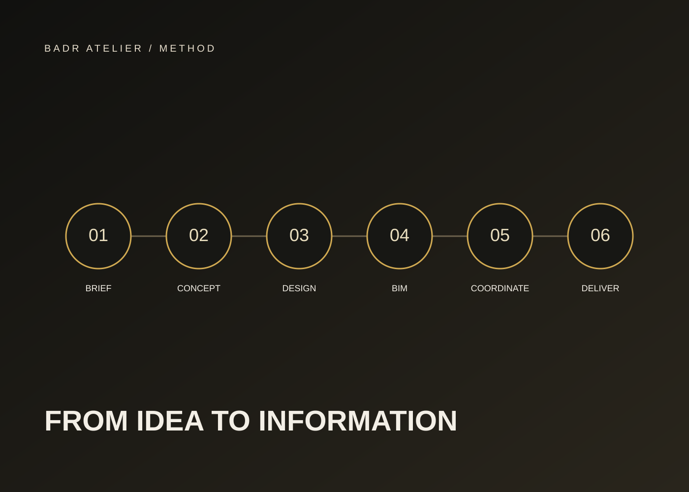

How We Work
Decision before production. Value before volume.
BADR's process is designed around questions and decisions.

DISCOVER
What opportunity are we really dealing with?
Site, market, business model and constraints are clarified.
TEST
Which development idea creates the strongest balance of return and value?
Compare development options, density, product mix and positioning.
DESIGN
Does the architecture express the right product?
Architecture and landscape are developed as one coherent story.
MODEL
Is the design becoming controlled information?
The project moves into structured BIM models.
COORDINATE
Can architecture, structure and MEP coexist without eroding the design?
Interfaces, clashes and buildability risks are addressed early.
COMMUNICATE
Can every stakeholder understand the same project and the same decision?
Clear outputs enable clearer decisions.
Review Culture
Design review is not the last check. It is part of the design itself.
Our internal review spans commercial logic, architecture and technical delivery.
Start at the Right Stage